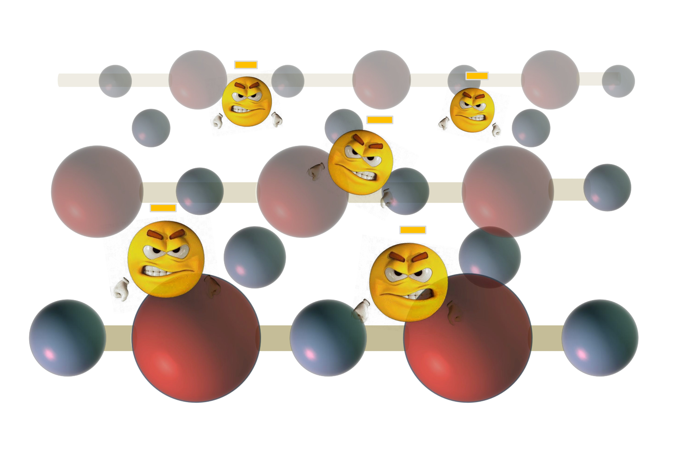

Projects
Zebrafish in the battle with toxins
Every day, different chemicals enter our cells and have to be properly metabolized. Metabolism is like a direction path that consists of four different steps: absorption as the step where a chemical enters, distribution which shows where it should go, transformation used to simplify complex chemicals and elimination, the final step. The most important step in the battle with toxins is elimination, where proteins as the cell guards kick intruder chemicals out. So called "MATE proteins" can be seen as elite warriors which return vile drugs to keep peace in our cells, meaning to keep them healthy. In mammals, these proteins prevent illnesses or even cancer by pumping the drugs out. In bacteria, MATE proteins help to get rid off antibiotics sent to kill them and thereby making them more resistant. Either way, knowledge about MATE substrates and the mechanism of its excretion is highly valuable, especially in drug development.
Fish are animals surrounded by water, which helps with distribution of chemicals. Different tissues need different amount of MATE proteins since they are involved with distinct chemicals. Zebrafish is one of the model organisms in molecular biology which will help us in understanding which tissues are mostly used in everyday fight with toxins. The aim of this project is to answer which tissues are important in metabolism. Is there any difference between them and can we find a reason for it? Participants of this project will try to reconstruct a phylogeny tree based on MATE proteins and get hands on experience in RNA isolation from tissues, RT-PCR, restriction enzymes and semi-quantitative analyses of gene expression in zebrafish.

Petra Krznar
University of Zagreb, Croatia
Petra is finishing her Masters in molecular biology with great interest in computational biology, especially structural biophysics. She hopes to start a Ph.D. that combines experimental and computational methods to answer questions about membrane proteins. She participated at the Summer School of Science in 2009. as a Swapshop leader. Petra is also a group coordinator at IAESTE student union and in her spare time enjoys reading books, watching movies, playing board games and travelling.
When electrons conspire: Physics of strongly correlated electronic materials
A piece of 'normal' metal (like copper or gold) is an excellent conductor of electricity because of an enormous sea of 'free' electrons which exist in the material and easily move through it. The way they avoid one another so efficiently is rather fascinating in itself, but once strong electronic interactions kick in, all sorts of unexpected things happen. The material can suddenly lose all conductivity, become a magnet, or even a high-temperature superconductor. And we still don't quite understand what makes electrons conspire in so many different ways. The physics of strongly correlated electrons is thus at the forefront of modern solid state research, and in this project we will explore some aspects of it.
The experimental part of this project will be a true condensed-matter physics experiment - including vacuum, liquid nitrogen, invisible lasers, sapphire holders and sample materials you've never heard of - investigating the metal-to-insulator transition in vanadium trioxide. This compound abruptly transforms from a (quite normal) conductive metal to an almost complete insulator at a temperature close to -120°C. In addition, it becomes magnetic and transparent for infrared light, all due to electron-electron interactions. To measure the three effects simultaneously, we will construct an infrared absorption meter and a special noncontact resistance measuring probe (essentially a highly sensitive 'metal detector'). In the theoretical part we will see how the strange behaviour can be nicely understood by combining (very elementary) quantum mechanics with a simple picture of electron interactions. Using this idea we will try to obtain the metal-to-insulator transition in a small computer simulation. The basic physics involved is surprisingly general, and represents the first step in explaining more complicated systems (including superconductors).
Neva Mergetic
Josip Racic Elementary School, Zagreb, Croatia
Neva holds a degree of Master of Physics and Computer Science Education and is currently teaching computer science in an elementary school. This fall, she is planning to start Ph.D. studies in atomic, molecular and optical physics or condensed matter physics at Faculty of Science in Zagreb. Neva participated at the Summer School of Science in 2011 as a Swapshop leader on magnets. She loves going to gym, summer, good food, chocolate, board games and partying with friends.

Damjan Pelc
University of Zagreb, Croatia
Damjan graduated this winter at the Department of Physics, Faculty of Science of the University of Zagreb, and is currently working on a project investigating high-Tc superconductors in the NMR lab of said Department. He has been a project leader at the Summer School of Science for four times since 2008. He enjoys constructing stuff (especially if it works afterwards), all kinds of music, trains, and an occasional game of table tennis.
Determination of the mechanical properties of composite materials
Composite materials are used in all types of structures, from spacecrafts to marine vessels, from bridges and domes on civic buildings to sporting goods. The brand new airliners of Airbus, Boeing, or Bombardier are all state-of-the-art applications of polymer-matrix, fiber-reinforced materials, known as composites. Even human prostheses are made of these materials. But, why are they so widely used? Composites are materials that have strong fibers surrounded by a weaker matrix material. The matrix serves to distribute the fibers and also to transmit the load to them. Final mechanical properties depend mainly on the fiber mechanical properties and its volume fraction. Composite structures are fabricated using woven fabrics that are stacked up and oriented in many directions. The global mechanical properties of a composite structure are strongly dependent on the mechanical properties of their constituents and on the number of plies. In order to be able to analyze this kind of structures, engineers and scientists measure and predict the mechanical properties of the unidirectional ply, as the basic building block of a laminate.
The objective of this project is to calculate the mechanical properties of a laminate fabricated in situ, using measured parameters as input data, like volume fractions and the Young modulus of a laminae, by means of routines written in Matlab. Other topics would be discussed as well, such as why composite materials are used instead of metals, or how composite materials are used in structures. Advantages of composites over metals will be investigated, from the standpoint of strength, stiffness, weight and cost. The Classical Laminate Theory would be the basis of the analytical and numerical approach.

Erik Vargas-Rojas
Université de Franche-Comté, Besançon, France
Erik is pursuing a doctorate at the Université de Franche-Comté (eastern France). He holds a MSc in Mechanical Engineering and a BSc in Aeronautical Engineering. His doctoral research is about the integral design of reservoirs under high internal pressure fabricated with composite materials. Erik has experience as an Academic and Researcher at Instituto Politécnico Nacional (Mexico), and as a Design Engineer in the field of hydraulics. He has other passions beyond aviation and science, like swimming, hiking, film festivals and photography.
Understanding genetic mutations in the context of human diseases
Gene mutation is a permanent change in the DNA sequence that encodes the gene. Mutations range in size from a single DNA building block to a large segment of a chromosome, and they can either be inherited from a parent or acquired during a person’s lifetime. Mutations can be caused by external agents such as chemicals or viruses, as well as errors that occur during DNA replication throughout a cell’s life cycle. When a mutation alters a protein that plays a critical role in the body, it can disrupt normal development and/or cause certain medical conditions such as genetic disorders and cancer. Although most mutations are harmful, a small percentage can actually lead to a new version of a protein that may help the organism (and its future generations) better adapt to changes in their environment.
The goal of this project is to learn about the discovery and analysis of genetic mutations. We will first use basic tools of molecular biology to clone, produce, and visualize Green Fluorescent Protein (GFP) in E. coli. Expanding on these techniques, students will also analyze a given set of GFP mutants and learn how certain mutations may affect the structure and the function of the protein. Properties of mutant proteins will be studied and compared with those of the wild-type GFP protein. In addition, theoretical instructions and skills developed in the lab will be used to explore and understand the basics of human genetic disorders. This will be accompanied by a discussion/debate on ethical issues raised by the human genome project and the availability of genetic information for clinical purposes.
Maja Sedic
Tufts University, Boston, USA
Maja is a PhD Candidate in the Cell, Molecular and Developmental Biology Program at Tufts University. As a member of the Kuperwasser laboratory, Maja’s research focuses on understanding why women with an inherited mutation in a gene called BRCA1 have an increased risk of developing breast cancer. Maja has a strong passion for science education and has taught biology courses at both the elementary and college levels. In her free time Maja enjoys reading, traveling and playing team handball.
Programming a mind reading machine
Brain-computer interface (BCI) methods provide a direct communication pathway from the brain to the external device. There are several ways to achieve this communication, but one of the most simple, affordable and researched is by using electroencephalography (EEG) signals on the scalp resulting from the brain's electrical activity. Classical BCI relied heavily on the brain's ability to biofeedback - adjust its mental states in a way machines are able to detect. This approach required months of disciplined training in order to achieve reliable results. Luckily, development of powerful signal processing and machine learning techniques in last few decades allowed for a more practical approach where EEG signals are first computationaly processed and then used as input into an automatic learning system. In this way the responibility of learning is shifted from humans to machines allowing modern BCI systems to provide reliable results after only few minutes of adjustment.
The goal of this project is to develop computational techniques for processing and learning from EEG signals in order to detect various mental states. We will either use commercial EEG signal acquisition headset to collect necessary data, or download freely available datasets of EEG activity from the Internet. We wil start by extracting couple of well known characteristic signals used in brain science like rhythmic activities of central nervous system and P300 signal, proceeding later to design and implementation of our own signal processing techniques. This will allow us to build an automatic learning system capable of recognizing new patterns associated with specific mental states.
Matija Piskorec
Rudjer Boskovic Institute, Zagreb, Croatia
Matija currently works as a project associate at Rudjer Boskovic Institute in Zagreb. His interests include computer science in general and various related fields like artificial intelligence, machine learning and mathematical modeling. He joined the Summer School of Science five years ago, participating as a project leader in 2008 and 2009, and as an organizer in 2010 and 2011. In his spare time he enjoys good photography and reads a lot.

Matko Bosnjak
Rudjer Boskovic Institute, Zagreb, Croatia
Matko holds an MSc in Computing together with 4.5 years of experience in applied machine learning on various projects at the Rudjer Boskovic Institute in Zagreb and the Faculty of Engineering, University of Porto, Portugal. His research interests lie in theory and application of machine learning, and generally artificial intelligence. He further plans to advance those interests in a PhD in machine learning. In his spare time he enjoys mountain biking, traveling and chilling with friends.